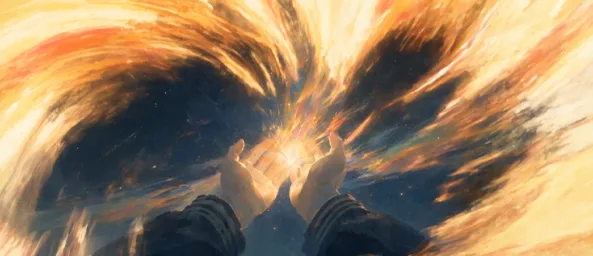

A 2D short inspired by illuminated manuscripts.
Original production notes · Chinese
Motion Notes · 《骑士与牧羊人》TRES VIAE
墨线轮廓 + 平涂色块 + 繁密纹样边框；平面化的画面空间，机位锁定或只做 2D 平移。
01 00:01.9 – 00:04.6 · 2.7s · LOOP
三联画 → 三层分屏
竖向三联画（骑士 / 修女 / 牧羊人）与横向三层分屏是两种版式，严格区分。
02 00:09.8 – 00:12.9 · 3.1s · LOOP
泥金抄本风实现
Wan3能力特色
03 00:26.6 – 00:31.0 · 4.4s · LOOP
片名
TRES VIAE 片名动效生成测试
设计要点
有限动画
短促的步进姿势、停顿姿势，次级运动只放在头发、布料、火焰、翅膀上。
平面光
抄本式平光，没有太阳和光束；每个镜头按自己的色彩关系上色。
